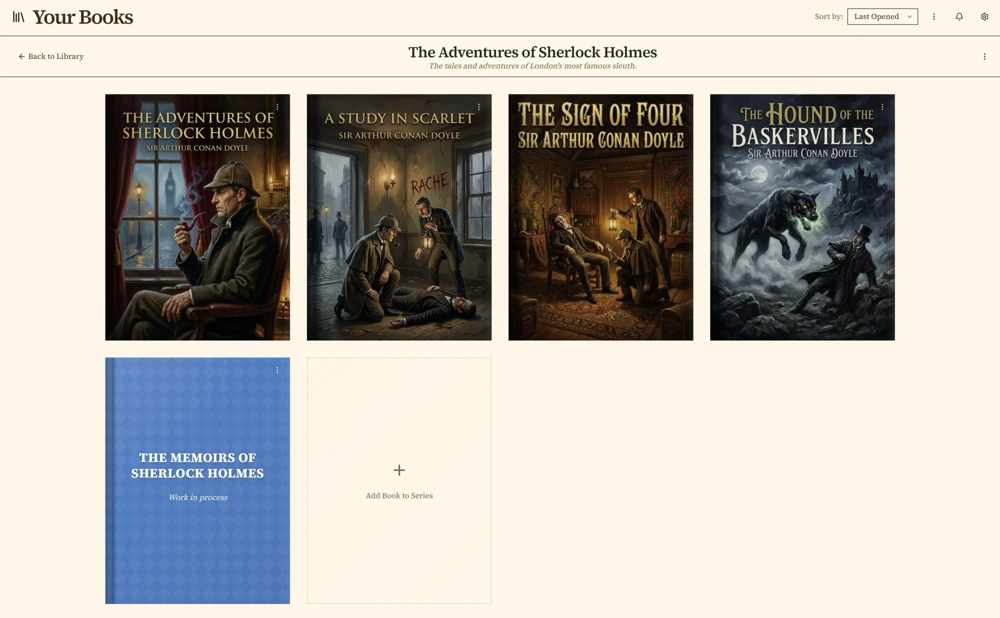

Ellipsus Alternative
Penpoint vs Ellipsus: an Ellipsus alternative that remembers your world
Ellipsus is built to move a draft between people, and Penpoint is built to keep track of what you invented. Neither one uses generative AI, and both of them end in something you own, so the choice comes down to something else entirely.
Last checked: September 2026, against Ellipsus's Plus pricing, help center, and public roadmap
The short answer
Ellipsus is the better place to write with other people, and it costs nothing. Unlimited documents, unlimited drafts, unlimited collaborators, five permission roles, and comments from anyone you invite.
Penpoint is the better place to keep a long story straight. Characters, locations, items, and a timeline on a calendar you invented, tracked across every chapter and every book in a series, in one file on your disk.
Ellipsus is free, or $99 once for Plus. Penpoint is $40 once.
Penpoint vs Ellipsus at a glance
← Scroll to compare →
| Penpoint | Ellipsus | |
|---|---|---|
| Price | $40 once | Free, or $99 once for Plus |
| Free plan | No, a 14-day trial | Yes, with no caps |
| Where your writing lives | A file on your disk | On Ellipsus's servers, opened in a browser |
| Works with no connection | Yes, always | No, a connection is required |
| Desktop app | Windows, macOS, Linux | Browser only, desktop app in progress |
| How a book is organized | Books, chapters, and scenes | Documents, drafts, and folders |
| Worldbuilding entries | Characters, locations, items, arcs, notes, tags | None |
| Timeline and invented calendars | Yes | No |
| A whole series in one file | Yes | No |
| Real-time co-authoring | No | Yes, with unlimited collaborators |
| Comments from other people | No | Yes, across five permission roles |
| Automatic version history | No, drafts you save yourself | Yes, 30 days on the free plan |
| Manuscript export | Word, PDF, EPUB, RTF, Markdown, text | Word, PDF, Markdown |
| Export everything at once | Yes | No, one document at a time |
| Spellcheck languages | 60, offline | 18, downloaded per document |
| Prose analysis | No | Nine measurements, on Plus |
| Generative AI | None | None |
What Ellipsus gets right
Ellipsus calls itself a collaborative writing tool made for creativity, and the product is organized exactly the way that sentence promises. Its own feature page walks through four steps, in order: write, draft and merge, collaborate, publish.
The unit is a document. Inside a document you make drafts, which are full copies you can take in any direction without touching the original, and which you can merge back when you like what you did. Their help center puts it plainly: in Ellipsus, there are two places you can write, the main document and drafts. Drafts do not update themselves from the original, so a writer can leave three versions of a scene sitting side by side and come back to them later. Many writers never merge at all and keep drafts as working spaces.
That same mechanism is how another person gets in, and this is the part Ellipsus has built furthest. There are five roles. An Owner does everything. A Document editor can edit the main document, make drafts, comment, chat, and merge. A Draft editor can write in drafts but cannot touch the main document or merge. A Commenter can only leave comments, and a Viewer can only read. You invite by email or by a link, nobody can see anyone else's email address, and the number of collaborators is unlimited on the free plan.
The free plan is unusually generous in general: unlimited documents and drafts, 30 days of version history, 37 themes, and no card required to sign up. Ellipsus Plus is optional, costs $99 once, and adds custom themes, Emboss, writing insights, public version history on Reader links, and customizable Snippets. The company is based in Berlin, launched in 2023, and says 700,000 writers now use it. They publish a page headed Our stance on generative AI, and it rules the technology out of Ellipsus for good. Fan writers get their own path out: an Export to AO3 button copies a document as HTML and opens Archive of Our Own in a new tab, ready to post as a new work or a new chapter.
None of that is a compromise version of something else; it is a well-made tool for a specific job.
Why writers look for an Ellipsus alternative
The reasons are structural rather than critical: Ellipsus does what it set out to do, and a novelist with a large invented world eventually wants something it was not built to be.
Two places to write, and neither one is a chapter
Documents, drafts, and folders make up the entire hierarchy. Ellipsus has no chapter as a building block. That leaves a novelist two options and no third: keep the whole book in one long document, or split it into many documents in a folder and hold the running order in your head. Writers do work around this by using drafts as chapters, but drafts were built to be alternate versions of the same text rather than sequential parts of one book, so the workaround fights the grain of the tool. Neither route gives you a word count for the book, a reorderable outline, or a way to move scene four of chapter nine somewhere else.
Nowhere to keep the world except more documents
Characters, locations, timelines and invented calendars have no home of their own in Ellipsus. A story bible is therefore another document, which means your cast list is prose that nothing else in the app can read. Nothing links a name in chapter twelve to the place you described it. Nothing tells you which chapters a character appears in. Nothing catches it when the innkeeper's name changes between two sittings four months apart, because as far as the software is concerned both spellings are just words.
This is a deliberate boundary rather than an oversight. Their public roadmap lists Charts and Maps, and Spreadsheets, under Unlikely.
A connection is part of the product today
Ellipsus runs in a browser, and its own help center is explicit that the app needs a live, stable internet connection to reach its services and save your work. On a train, on a plane, or in a cabin, that is the whole app.
They are fixing it. In September 2026 their public roadmap carried only five items marked in progress, and three of them were Offline support, a Desktop app, and a Native mobile app. A writer choosing today is choosing against a gap Ellipsus has openly prioritized closing.
Your library comes out one document at a time
A document comes out as .docx, PDF, or Markdown. The download covers the main document only and not its drafts, and the help center states that bulk and automated downloads are not currently possible. For one short story that is nothing.
For forty documents that make up a trilogy it is forty trips, and there is no automatic local backup to fall back on, which is the other half of the same fact.
Where Penpoint is different
Ellipsus organizes writing around the people you share it with, and Penpoint organizes writing around the things you made up. That single difference explains almost everything else that separates them.
The Chapter Scanner reads your cast out of the draft

Point the Chapter Scanner at chapters you have already written and it proposes the worldbuilding entries itself, sorted into three groups. Matches are people, places, and things it is confident you already have. Possible Matches are weaker hits worth a glance. New Discoveries are proper nouns in your prose that match nothing you have recorded yet, which is where the characters you invented mid-scene and never wrote down turn up.
You approve or reject each one, and nothing is created behind your back.
This matters most for exactly the writer Ellipsus suits: someone with a lot of finished prose and no organized list of who is in it. Import the draft, run the scanner, and the bible is largely built from work you already did.
An entry for every kind of thing, and what it lets you see

Characters, locations, items, notes, tags, story arcs, and character arcs each get a real entry rather than a paragraph. Locations nest, so a room sits inside a tavern inside a city inside a kingdom, and the hierarchy is navigable instead of implied. Because these are entries, Penpoint can draw things with them. The relationship map lays out who knows whom. The timeline places events on a custom calendar you defined yourself, with your own month names and your own week length, so a date in a world with thirteen months stays a real date the software can sort. Rich-text tables work inside those fields as well, which is where magic systems and stat blocks tend to end up.
A series is one file

Any Penpoint book can be converted into a Series holding several internal books that share one file. Characters, locations, and items are series-wide, with a per-book record of which ones appear where.
Write book three and your cast from book one is already there, already spelled the way you spelled it.
No arrangement of folders does this.
One search across the prose and the world

Ctrl+K searches manuscript prose and everything else in the book at once: characters, locations, items, chapters, notes, arcs, and tags. In a series it covers every book in the file in one pass.
A spellchecker that already knows your characters' names
Penpoint loads the names of your characters, locations, and items straight into the spellcheck dictionary when the book opens. The invented names stop being flagged because you already entered them somewhere else, not because you taught the dictionary one word at a time. Sixty languages are available, and all of it runs offline.
The file is yours, and so are the backups
A Penpoint book is one file on your own disk, which you can copy, sync, or archive like anything else you own, and the app keeps automatic local backups on a retention schedule without any subscription involved. Penpoint imports .docx, .epub, .rtf, Markdown, and plain text, and exports a whole book as Word, PDF, EPUB, RTF, Markdown, or plain text, or the entire compendium of worldbuilding at once. Penpoint's own Markdown format round-trips as well: an export carries enough structure to be edited elsewhere and read back in without losing its shape.
What Ellipsus still does better than Penpoint
Two of these decide the question on their own: writing with other people, and a price of nothing.
Writing with other people
Penpoint has no co-authoring, no invited collaborators, no share links, and no way for another person to comment on your manuscript. The inline comments it does have are addressed to nobody but you. Ellipsus does all of it, across five roles, with no cap on collaborators even on the free plan.
If a beta reader, an editor, or a co-author touches your draft, pick Ellipsus. That is the whole decision.
A free plan that stays free
Ellipsus costs nothing, indefinitely, with unlimited documents and drafts. Penpoint costs $40 and offers a fourteen-day trial rather than a free tier. For a writer who cannot spend anything right now, $0 beats $40 and no argument about value changes that arithmetic.
Version history that happens without you
Ellipsus keeps 30 days of version history automatically on the free plan, and Plus can publish selected snapshots on a Reader link. Penpoint compares a draft you saved yourself against the current manuscript, highlighting what changed down to the phrase, which is useful but only covers moments you thought to mark.
Knowing how you write
Writing insights on Plus covers nine measurements including vocabulary diversity, sentence length, sentence rhythm, passive voice, adverbs, and repeated echoes, calculated on your own device. Emboss records the shape of your working process. Penpoint has a word and session counter and nothing resembling either feature.
Any device, right now
Ellipsus opens in a browser on a laptop, a tablet, or a phone with nothing to install, and the same document is there on all of them. Penpoint runs on Windows, macOS, and Linux, and its mobile companion entered beta testing in July 2026 rather than shipping on the stores.
A Penpoint book sits on a disk you control, and its automatic backups land right beside it by default. One dead drive takes both, unless you point Penpoint's optional second backup folder at another drive or a cloud folder. Ellipsus lives on somebody else's servers, so your writing depends on their system staying up, and those servers are backed up by people paid to keep them.
Which one should you choose?
It comes down to whether writing is something you do with other people or something you do with a world.
Choose Ellipsus if
- Anyone else writes, edits, or comments in your drafts
- You want beta readers in the document rather than in a group chat
- You need it on a phone and a laptop today, with nothing installed
- You post to Archive of Our Own
- Spending nothing matters more than owning the file
- Your project is stories rather than one long invented world
If your writing involves other people at any stage, this is the better home and the free plan is not a trap.
Choose Penpoint if
- You are keeping track of a large cast across many chapters
- Your world needs a timeline and a calendar you invented
- You are writing a series and want one file for all of it
- You write where there is no connection
- You want the whole library out in one action, in six formats
- You already have the prose and want the bible built from it
Try it free for fourteen days. Every feature unlocked, no account and no credit card.
Penpoint and Ellipsus pricing compared
| Penpoint | Ellipsus | |
|---|---|---|
| Free tier | 14-day trial | Free forever |
| Pay once | $40.00 | $99.00 for Plus |
| Annual route to ownership | Not offered | $60.00 a year, twice |
| Monthly route to ownership | Not offered | $6.00 a month for 24 months |
| Slowest route, total | $40.00 | $144.00 |
| Refund | 30-day money-back guarantee | 14 days, then non-refundable |
Ellipsus calls this subscribe-to-own, and each route is a different way of paying for the same license. Paying once costs $99.00. Paying annually costs $60.00 a year for two years, which is $120.00. Paying monthly costs $6.00 for 24 months, which is $144.00, and those months do not have to be consecutive. Once the total is paid, Plus is yours and the payments stop. The monthly route therefore costs $45.00 more than the one-time purchase for the same license, which is the price of spreading it out.
The license is bound to your Ellipsus account rather than to a file: their payment guide describes it as the perpetual right to use Plus features through their service, and deleting the account deletes the license with it. Stop paying partway through and the account reverts to the free plan; you keep credit for whatever you already put toward the license.
The cheapest real answer here is Ellipsus's free plan, which costs nothing and is not crippled.
Penpoint is $40.00 once for Windows, macOS, and Linux together, with a 30-day money-back guarantee and updates included. Ellipsus gives EU and UK buyers a 14-day right of withdrawal and is non-refundable after that, with no prorated refunds partway through a paid period. Neither company is renting you software.
Penpoint vs Ellipsus: common questions
How do I move my writing from Ellipsus into Penpoint?
Ellipsus downloads a document as .docx, PDF, or Markdown, and Penpoint imports .docx and Markdown directly, so a manuscript moves without retyping. Penpoint shows you the chapters it found before it writes anything, so you can correct the split first. Ellipsus downloads one document at a time and its help center states that bulk downloads are not currently possible, so a book kept as many separate documents takes several trips. Installing Penpoint moves nothing and deletes nothing, so you can run both while you decide.
Is Ellipsus free?
Ellipsus has a free plan with no time limit and no caps: unlimited documents, unlimited drafts, and unlimited collaborators, plus 30 days of version history and 37 themes. Ellipsus Plus is optional and adds custom themes, writing insights, Emboss, and customizable Snippets. Penpoint has no free plan, just a fourteen-day trial with every feature unlocked and a one-time $40 purchase after that.
How much does Ellipsus Plus cost?
Ellipsus Plus costs $99.00 as a one-time purchase, or $60.00 a year for two years, or $6.00 a month for 24 months. The slowest of those totals $144.00, and whichever one you pick, finishing it leaves you owning the license with nothing further to pay. Cancel before it is paid off and you drop back to the free plan, though the payments you already made still count toward the license if you come back. Closing the account instead forfeits them. Penpoint is a one-time $40 purchase, and Penpoint Cloud, the optional backup and sync service, is a separate subscription the desktop app does not require.
Does Ellipsus work offline?
Not today. Ellipsus runs in a browser and its help center states that Ellipsus requires an active, stable connection to reach its services and sync your work. As of September 2026, offline support, a desktop app, and a native mobile app were all listed as in progress on the Ellipsus public roadmap. Penpoint is a desktop program that never needed a connection at all, on Windows, macOS, and Linux alike.
Can I write with a co-author in Penpoint?
No. Penpoint is a single-writer desktop app with no shared editing, no invited collaborators, and no share links, and its inline comments are notes you leave for yourself. Ellipsus is built for the opposite case and gives you five collaborator roles, unlimited collaborators on the free plan, and drafts that other people can write in and merge. If someone else works in your manuscript, choose Ellipsus.
Does Ellipsus have worldbuilding tools for characters and locations?
No. Ellipsus organizes writing as documents, drafts, and folders, and its own help center describes the two places you can write as the main document and drafts. There is no character entry, no location entry, and no timeline, so a story bible in Ellipsus is more prose in another document. Penpoint gives each of those its own kind of entry, linked to the chapters that use them.
Is Penpoint a subscription?
No. Penpoint is a one-time $40 purchase covering Windows, macOS, and Linux, with a 30-day money-back guarantee, and the desktop app never asks for a renewal. Ellipsus reaches ownership too, by a different route: its Plus license costs $99 once, or $60 a year for two years, or $6 a month for 24 months, and once it is paid in full you keep it.
Does Penpoint use AI?
No. Penpoint has no AI writing features and does not send your prose to any AI service. Ellipsus takes the same position and states on its own site that it will never integrate or use generative AI. This is one of the few places where Penpoint and Ellipsus agree, so it should not decide the choice between them.
Can I try Penpoint before buying?
Yes. The Penpoint trial runs fourteen days with every feature unlocked, and needs no account and no credit card. Ellipsus is free to sign up for, so you can keep an Ellipsus account open and trial Penpoint at the same time with the same chapters.
Your manuscript and your world, in one file.
Every feature for 14 days, with no account and no card. $40 once after that, for Windows, macOS, and Linux together.
Join our Discord